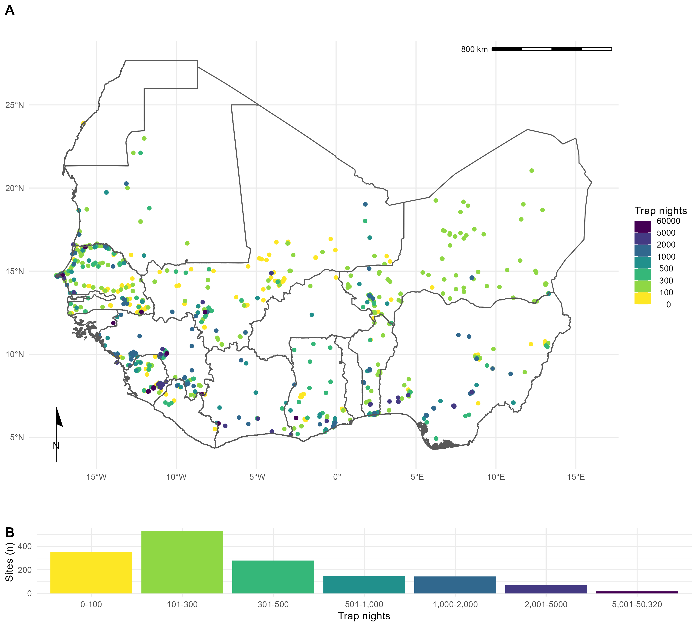
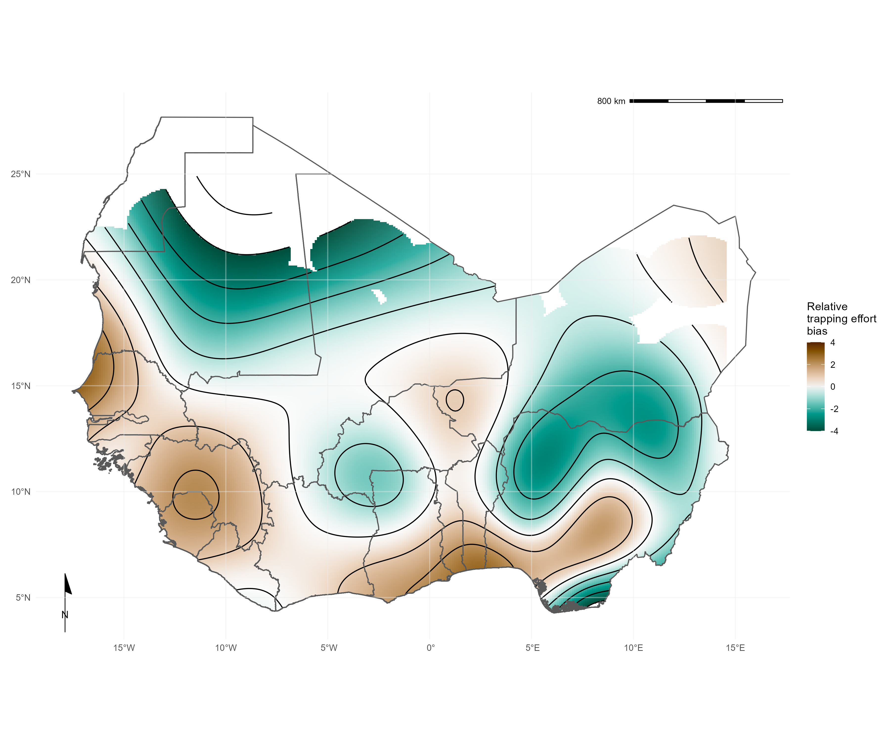
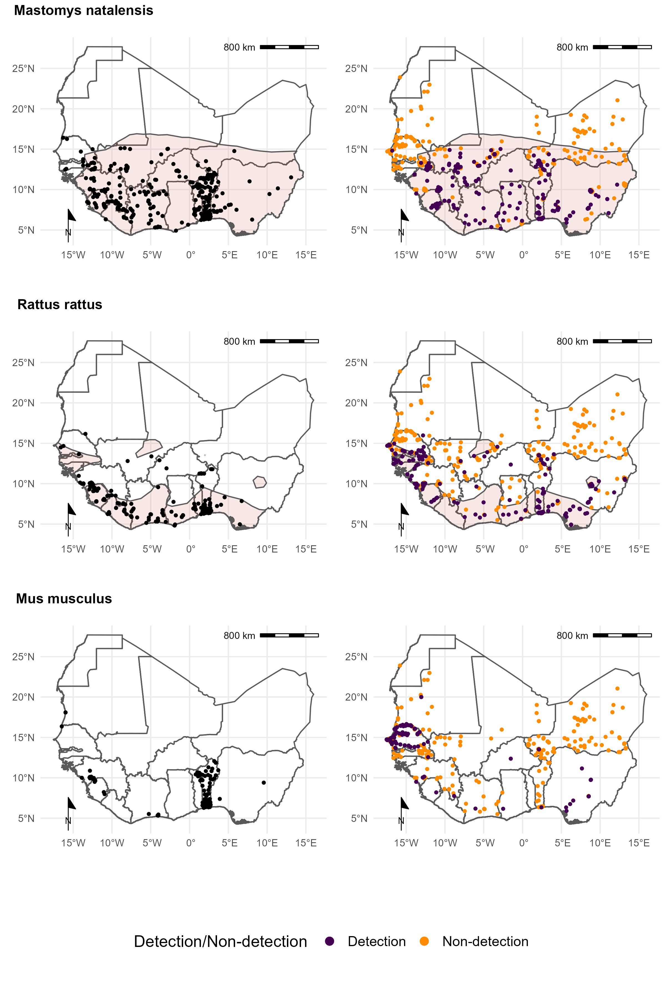
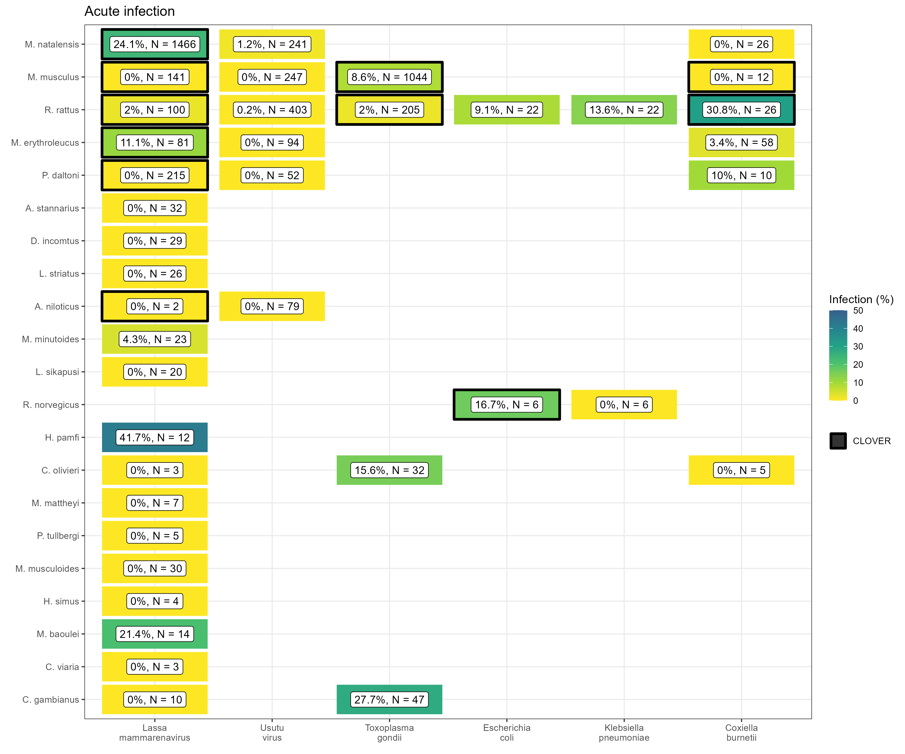
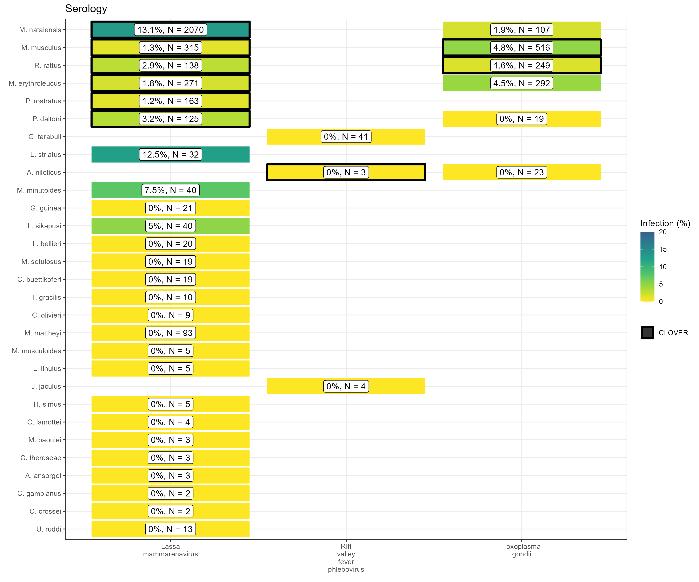

Rodent trapping studies as an overlooked information source for understanding endemic and novel zoonotic spillover.
Motivation
When considering the risk of human infection from zoonotic infectious diseases the distribution of known hosts is used to spatially define the extent of risk. These data are typically derived from sources including range maps from the International Union for Conservation of Nature’s Red List of Threatened Species and presence data from the Global Biodiversity Information Facility. The prevalence of pathogens within these ranges can then be used to infer risk to human populations, for example (Han, Kramer, and Drake 2016) and (Basinski et al. 2021).
Additional data that can contribute to these approaches are available in rodent trapping studies. Unfortunately, these have not been synthesised in a manner that would support their use. We aimed to produce a dataset that could be used when investigating the risk of zoonotic spillover and novel pathogen emergence in rodents in West Africa. We compared this to currently available datasets to identify areas of rodent and pathogen sampling bias to identify regions that would benefit from increased sampling effort. To assess the completeness of current datasets of host-pathogen associations, namely CLOVER (Gibb, Carlson, and Farrell 2021) we extracted data on testing of trapped rodents for pathogens and calculated the proportion of a rodents range in which these pathogens were sampled for.
The data has been prepared to support re-use and is available online in a Zenodo repository and Google sheets document. A web-based application has been developed to support exploration of the data.
Method
To identify relevant literature, we conducted a search in Ovid MEDLINE, Web of Science (Core collection and Zoological Record), JSTOR, BioOne, African Journals Online, Global Health and the pre-print servers, BioRxiv and EcoEvoRxiv for the following terms as exploded keywords: (1) Rodent OR Rodent trap* AND (2) West Africa, no date limits were set. We also searched other resources including the UN Official Documents System, Open Grey, AGRIS FAO and Google Scholar using combinations of the above terms. Searches were run on 2022-05-01, and returned studies conducted between 1964-2021.
We included studies for further analysis if they met all of the following inclusion criteria; i) reported findings from trapping studies where the target was a small mammal, ii) described the type of trap used or the length of trapping activity or the location of the trapping activity, iii) included trapping activity from at least one West African country, iv) recorded the genus or species of trapped individuals, and v) were published in a peer-reviewed journal or as a pre-print on a digital platform or as a report by a credible organisation. We excluded studies if they met any of the following exclusion criteria: i) reported data that were duplicated from a previously included study, ii) no full text available, iii) not available in English. One author screened titles, abstracts and full texts against the inclusion and exclusion criteria. At each stage; title screening, abstract screening and full text review, a random subset (10%) was reviewed by a second author.
Contributing data
Out of 4,692 relevant citations, we identified 127 rodent trapping studies. The earliest trapping studies were conducted in 1964, with a trend of increasing numbers of studies being performed annually since 2000. The median year of first trapping activity was 2007, with the median length of trapping activity being 1 year (IQR 0-2 years). Studies were conducted in 14 West African countries, with no studies reported from The Gambia or Togo, at 1,611 trap sites (Fig 1.).
Included studies explicitly reported on 601,184 trap nights, a further 341,445 trap nights were imputed from studies with no recording of trapping effort based on trap success, leading to an estimate of 942,629 trap nights (Fig 1B.). A minority of studies trapped at a single study site (30, 24%), with 46 (36%) trapping at between two and five sites, the remaining 51 studies (40%) trapped at between six and 93 study sites.

In total 76,275 small mammals were trapped with 65,628 (90%) identified to species level and 7,439 (10%) identified to genus, with the remaining classified to higher taxonomic level. The majority of the 132 identified species were Rodentia (102, 78%), of which Muridae (73, 72%) were the most common family. Soricomorpha were the second most identified order of small mammals (28, 21%). 57 studies tested for 32 microorganisms, defined to species or genus level that are known or potential pathogens. Most studies tested for a single microorganism (48, 84%). The most frequently assayed microorganisms were Lassa mammarenavirus or Arenaviridae (21, 37%), Borrelia sp. (9, 16%), Bartonella sp. (4, 7%) and Toxoplasma gondii (4, 7%). Most studies used Polymerase Chain Reaction (PCR) to detect microorganisms (37, 65%), with fewer studies using serology-based tests (11, 19%) or histological or direct visualisation assays (11, 21%). From 32,920 individual rodent samples we produced 351 host-pathogen pairs. With Rattus rattus, Mus musculus, Mastomys erythroleucus, Mastomys natalensis and Arvicanthis niloticus being assayed for at least 18 microorganisms.
Results
Spatial bias of trapping effort
We identified that current trapping effort (measured by the density of trap nights within an administrative area) was spatially biased towards areas with high human population densities and urban land use. Trapping effort was greatest in Eastern Senegal, the border region between Guinea, Liberia and Sierra Leone and Southern Ghana, Togo and Nigeria. Much of Burkina Faso, Côte d’Ivoire, Ghana and Nigeria have been relatively under-sampled.

Comparison to IUCN and GBIF data
We compared the distribution of commonly trapped rodents that would be inferred from these trapping data compared to GBIF detection data and ranges available from IUCN. We found that while the expected range of native, widespread rodents, such as Mastomys natalensis was well captured in the IUCN ranges it lacked the additional information of non-detection that can be seen from trapping studies (Fig 3.). For invasive rodent species, IUCN ranges were less suitable, particularly for Mus musculus which is not shown to have any range in West Africa. Compared to GBIF data sampling locations were more widespread across the region with additional non-detection information available from rodent trapping studies. A discrepancy in the locations of Mus musculus was observed. GBIF data suggests widespread occurrence of this species in Togo which did not match data from several rodent trapping studies performed in this region.

We found that consolidating these three sources of data provided better coverage of a rodents detection and non-detection range than any individual source of data alone.
Host-pathogen associations
CLOVER is a dataset combining four host-pathogen association datasets: EcoHealth Alliance’s HP3, The University of Georgia’s Global Mammal Parasite Database, The University of Liverpool’s Enhanced Infectious Diseases 2 database and one shared through a publication by (Shaw et al. 2020). We compared the host-pathogen associations within this source with those we extracted from rodent trapping studies for both assays for acute infection (i.e. PCR) and evidence of prior infection (i.e. seroprevalence).
We identified 25 host-pathogen pairs among 14 rodent and 6 pathogen species (Fig 4. and Fig 5.). We identified negative associations (non-detection through specific assays) for 45 host-pathogen pairs among 35 rodent and 7 pathogen species. CLOVER contained 10 (40%) of our identified host-pathogen associations, the remaining 15 (60%) were not found to be present in CLOVER, additionally CLOVER recorded positive associations for 4 (9%) of the negative associations produced from the rodent trapping data.


CLOVER also included an additional 492 host-pathogen associations we do not observe in rodent trapping studies. The majority of these 392 (80%) pairs are from species with global distributions (M. musculus, R. rattus and R. norvegicus), or from those with wide ranging distributions in sub-Saharan Africa (38, 8%) (i.e., A. niloticus, M. natalensis and Atelerix albiventris).
An additional advantage of this data is that spatial information on the location of pathogen detection is available for some, while databases such as CLOVER do not contain locations or positive or negative results.
Recommendations
We have shown that synthesis of rodent trapping studies to supplement curated rodent distributions can counteract some of the inherent biases in these data and that they can add further contextual data to host-pathogen association data. Together this supports their inclusion in efforts to model endemic zoonotic risk and novel pathogen emergence.
Future rodent trapping studies should be targeted towards regions that are currently under-studied. Further information on rodent presence and abundance across West Africa will aid the modelling of changing endemic zoonosis risk and the potential for novel pathogen emergence. Sharing of disaggregated data alongside research publications should be promoted with adoption of data standards to support ongoing data synthesis. Specifically, inclusion of exact locations of trapping sites, trapping effort and the dates at which trapping occurred would support more detailed inference of the spatio-temporal dynamics of host populations and the risk of endemic zoonosis spillover events. Despite these challenges we propose that rodent trapping studies can provide an important source of data to supplement curated datasets on rodent distributions to quantify the risk of endemic zoonosis spillover events and the hazard of novel pathogen emergence.
Pre-print
This work is currently under review, a pre-print has been deposited on BioRxiv and all data has been made available.
Poster
An earlier version of this work was presented as a poster at the Ecology and Evolution of Infectious Diseases conference in 2021.
References
Citation
@article{simons2022,
author = {David Simons and Lauren A. Attfield and Kate E. Jones and
Deborah Watson-Jones and Richard Kock},
title = {Rodent Trapping Studies as an Overlooked Information Source
for Understanding Endemic and Novel Zoonotic Spillover.},
journal = {BioRxiv},
date = {2022-11-01},
url = {https://www.biorxiv.org/content/10.1101/2022.08.30.505792v2.full},
doi = {10.1101/2022.08.30.505792},
langid = {en},
abstract = {Rodents a diverse, globally distributed and ecologically
important order of mammals are nevertheless important globally
distributed reservoirs of known and novel zoonotic pathogens.
Ongoing anthropogenic land use change is altering the composition of
these species’ abundance and distribution which among zoonotic host
species may alter host species assemblages and modifying the risk of
zoonoses spillover events. These changes mean demand that an a
better understanding of the current distribution of rodent species
is vital for accurately mitigating potential zoonoticdescribing
disease hazard and managing risk. However, available species
distribution and host-pathogen association datasets (e.g. IUCN,
GBIF, CLOVER) are often taxonomically and spatially biased. Here, we
synthesise data from West Africa from 127 rodent trapping studies,
published between 1964-2022, as an additional source of information
to characterise the range and presence of rodent species and
identify the subgroup of species that are potential or known
important zoonotic pathogen hosts species in this region. We
identify that these rodent trapping studies, although biased towards
human dominated landscapes across West Africa, can usefully
complement current rodent species distribution datasets and we
calculate the discrepancies between these datasets. For five
regionally important zoonotic pathogens (Arenaviridae spp., Borrelia
spp., Lassa mammarenavirus, Leptospira spp. and Toxoplasma gondii),
we identify host-pathogen associations that have not been previously
reported in host-association datasets. These omissions have the
potential for biasing estimates of current risk and drivers of
zoonoses. Finally, for these five pathogen groups, we find that the
proportion of a rodent hosts range that has been sampled remains
small with geographic clustering. A priority of future rodent
trapping studies should be to sample rodent hosts across a greater
geographic range to better characterise current and future risk of
zoonotic spillover events. In the interim, future studies of spatial
pathogen risk informed by rodent distributions must incorporate a
measure of the current sampling biases. The current synthesis of
contextually rich rodent trapping data enriches available
information from IUCN, GBIF and CLOVER which can support a more
complete understanding of the hazard of zoonotic spillover events.}
}